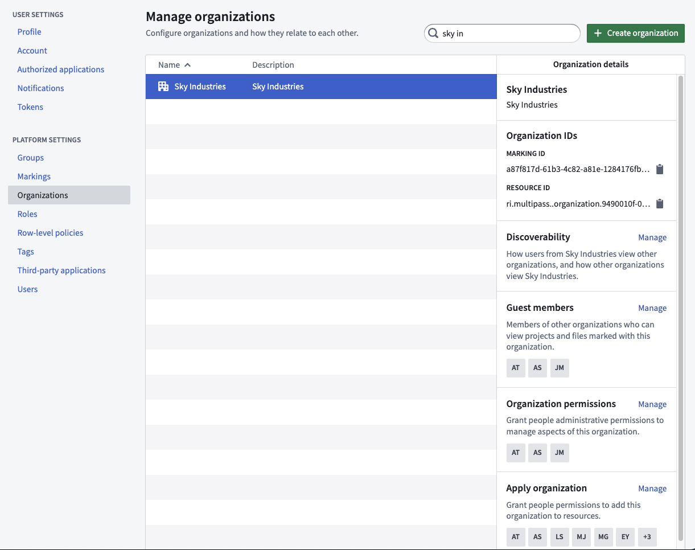
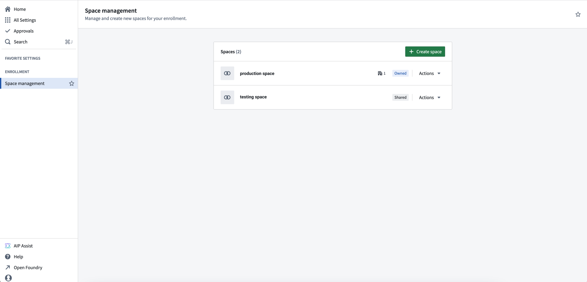
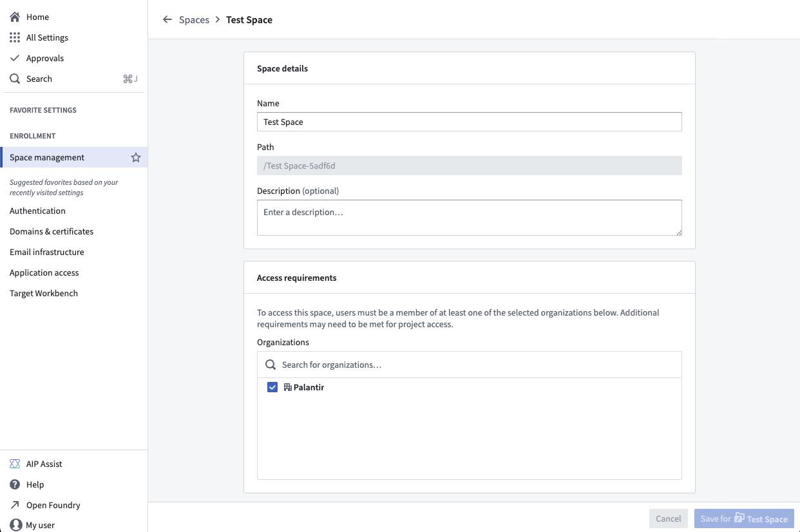
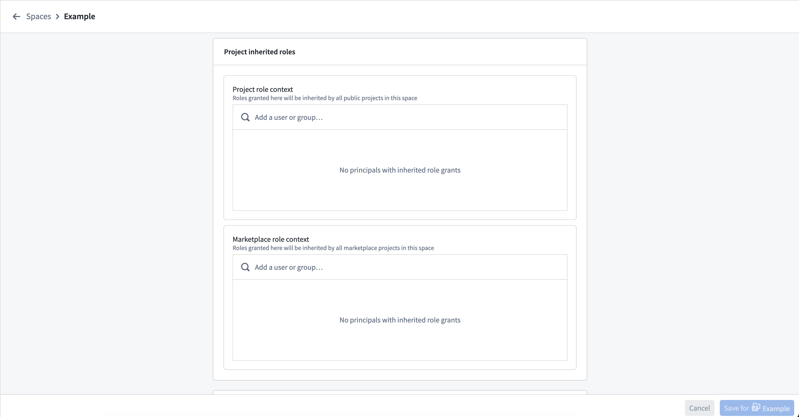
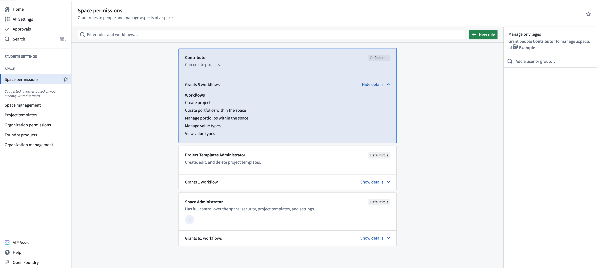

Organization permissions should be managed via Control Panel. Further Organization configuration is managed in the Foundry Settings tab.

Organizations have their own set of permissions that control how users can interact with organization access requirements on resources. These permissions are managed in Control Panel.
Organizations use two permissions that govern how users can modify organization access requirements on resources:
For more information on these terms, see the security glossary.
:::callout{theme="warning" title="Common error: missing Expand access permission"} If a user receives an error stating they lack the Expand access permission after trying to move a resource to a different organization or to remove an organization from a resource, an administrator must grant the user the Expand access permission on the source organization in Control Panel by navigating to Organization permissions > Marking permissions. :::
When Foundry home folders are enabled, they are automatically marked with the organization of the user.
:::callout{theme="neutral" title="Beta"} Configuration options to disable home folders are in the beta phase of development and may not be available on your enrollment. Functionality may change during active development. Contact Palantir Support to request access to this feature. :::
:::callout{theme="neutral"} Spaces have been rebranded from their previous name, namespaces. :::
Spaces settings are managed in Control Panel on the Space management page of enrollment settings.

From the Space management page, select + Create space.
As part of space creation, you will be asked to specify the following settings:
Project defaults, but you can use a custom role set instead.If you are an enrollment admin but are not able to create a new space, it may be because your enrollment is not suitable or you have hit a quota limit; contact Palantir Support for more information.

From the Actions dropdown menu, you can Manage the settings of a space. In addition to the settings mentioned above, you can configure:

From the Space permissions page in Control Panel, you can set the roles users have in the space. Each space comes with a set of default roles and the ability to create custom roles for greater flexibility in managing permissions. For each role, you can open the workflows dropdown menu to view the permissions granted with the role. Select a role to view the role grants in the panel on the right, where you can add or remove users.
To create a custom role, select + New role in the top right of the page, then select which workflows to include with this role. After creating the custom role, you can grant that role to users the same way you would for other roles. Custom roles can be edited or deleted through the Actions menu in the top right of each custom role.
:::callout{theme="warning"} Custom roles are "frozen", meaning that new workflows added to default roles will not automatically apply to custom roles. To include new workflows in a custom role, select Edit role and add them manually. :::

Legacy spaces might provide additional configuration settings. Below is a description of those settings: